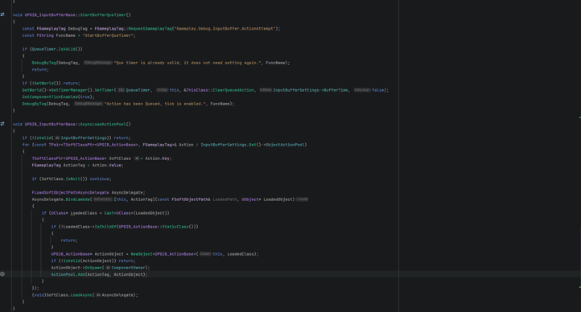
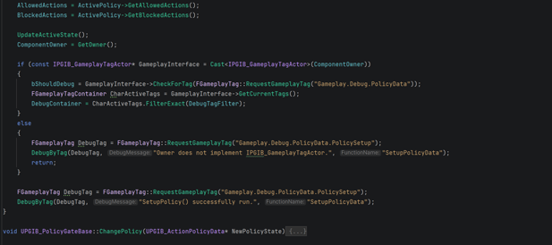

UE5 C++/Blueprint Hybrid Multiplayer Policy Gating, Action Binding and Input Buffering
A modular, data-driven policy-gating plugin for Unreal Engine 5, focused on gameplay data to drive permission, action bindings through mapping and callbacks, soft referencing and async asset loading, and multiplayer-ready replication. This is entirely built using gameplay tags to drive logic.
Technical Highlights
- Input buffering system for responsive player actions.
- Policy-gated action execution using UObject-based action data.
- Replicated multiplayer - Server-side design.
- Enhanced debugging - featuring debugging by gameplay tag look-up and filtering.
- Soft referencing/Async loading.
- Gameplay tag driven
- C++/Blueprint hybrid
The system is built with reliance on gameplay tag driven logic, this is perfect for reducing dependencies, by producing a targeted hierarchical way of assessing data. The policy is checked and if allowed, it is then sent to the buffer, if it cannot execute then it will store the action to execute that stored action once available. The system buffers input and executes it when conditions allow, improving responsiveness. It is also responsible for checking if it is an input that is supposed to be buffered or not.

System Purpose
The system was design so that it could meet the needs of any project by use of gameplay tags, it means the system can scale, and rapidly also. It enables designers to create tags, map actions, and not worry about dependencies. So, while out the box, the plugin is relatively simple, it solves real gameplay problems and more importantly, it does so at scale.
Communication is done through, interfaces rather than hard references. Where as closely related classes make use of "friend class" specifiers. The system, is built to handle effective debugging, by checking a root tag, comparing that with the tags on any player, and assessing which debugging channels are required. If there is an issue, or a successful execution, the debugging tool outputs both to the screen and as a custom log entry to inform the user. This makes debugging light work. If something fails at any point, any designer can see exactly why and can do so very quickly.
What about replication and UObject binding? how about that? Well, the InputBuffer component stores a Data Asset, this asset can be tweaked and manipulated, you could have different buffers for different things, for example, perhaps in combat you'd like more time, but when climbing, you'd prefer less time. This is easily achieved through this binding, you can set up a buffer for each case, swap/change it at run time. The settings asset, stores a map of executable actions, based on what the player intends to do. In short, Player input -> Input buffer -> Policy gate -> UObject. The settings also store a container of gameplay tags too, so it knows which actions can be stored, which ones need to execute immediately without being buffered. Since input and actions are gameplay tag driven, the policy gating component can easily assess a request and handle any rejections, for example: Say you don't want the player to interact while jumping, simply set interaction attempt as a blocked action on the jump state. Change your mind? simply remove the interacting intention tag. This is system-wide design on an expert level, you do not need to re-write code, simply change and modifiy the tags on any given state.

Finally, everything it is set up to use soft references where possible, so that actions can be async loaded at runtime when needed. This means, loading times can be done on a separate game thread, which is to say that the user will not feel the impacts. This also is the standard best practice way of working. By using soft reference data, memory allocation is reduced, as it will only take up memory when it is actually loaded. Let's assume we have two scenarios, an interactive driven cutscene level with a character, and our normal levels where the player can run around it. One approach is to write the code for 2 different levels, so that excess code is not loaded, or at risk of being executed causing bugs. Another way is with the system plugin I have designed here. We can keep the same character, swap the buffer settings out with a new set to handle and load only the relevant code that is needed. So we can effectively limit or extend capability accross different settings in a modular designer friend data-driven way.
Code Access
Full source can be shared privately with hiring teams on request. Public presentation includes demos, architecture notes, and selected snippets. You are welcome to download a playable build of the files these are freely available. 👉: Google Drive Link